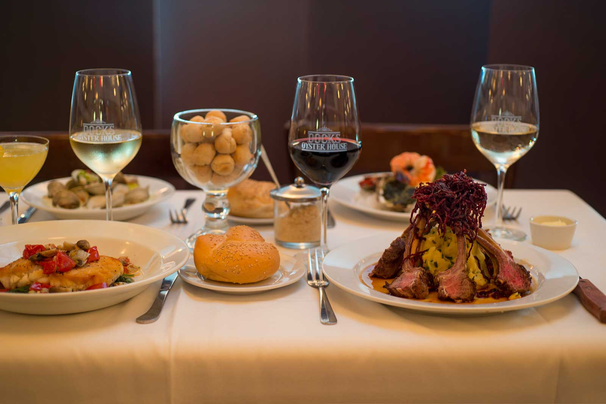

Dock's Oyster House
SeafoodOpen since 1897, Dock's Oyster House is the oldest restaurant in Atlantic City and one of the oldest in New Jersey. It has survived Prohibition, the rise and fall of the casino era, and every economic shift the city has been through. The menu is classic Jersey Shore seafood of raw oysters, clam chowder, broiled flounder done with the kind of confidence that only comes from over a century of practice. This is not a trendy spot. It is an institution, and the locals treat it like one.